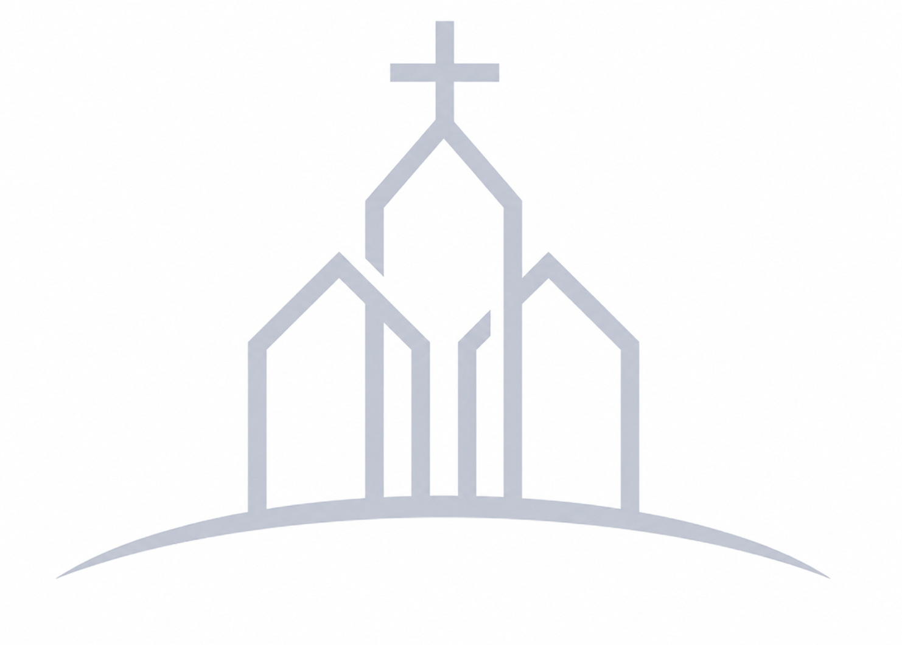

Oikos Church
Welcome to Yeoju Evangelical Holiness Church's Homepage.
Sarang Church hopes you have a peaceful
and graceful time with Sarang Church.

"꿈과 사랑이 있는 여주교회"
새가족이 되심을
진심으로 축하드립니다.
여주성결교회의 다음세대 교회학교는
예수님의 작은 제자들이
올바른 그리스도의 자녀로 성장하기 위한
훈련과정을 담고 있습니다
여주성결교회는 선교에 동참하는 공동체로
복음이 필요한 국내,외 지구촌 곳곳에
하나님의 복음을 전하는데
그 가치를 두고 있습니다
여주성결교회는 성도들이 예수님의 사랑을
경험하는 것을 가치있게 여기는 교회로
모든 성도들의 신앙성숙을 도와
예수 제자를 양육하고 있습니다

Wednesday Worship
2026.05.13 마태복음 15:29-39

Sunday sermon
2026.05.31 마태복음 5:1-3(신 ...

Praise
2026.05.31


여주성결교회 조형준 담임목사님의
인사말을 소개합니다
여주성결교회 성도님들의
성도기업을 소개합니다
대관신청 및 차량신청 등을
온라인에서 지원하고 있습니다
여주성결교회의 차량운행 시간을
안내해드리고 있습니다
경기도 여주시 우암로 96
(하동, 여주성결교회)
교회사무실 : (031)882-9966
팩스번호 : (031)882-9965
담임목사님과 장로님들을
소개합니다